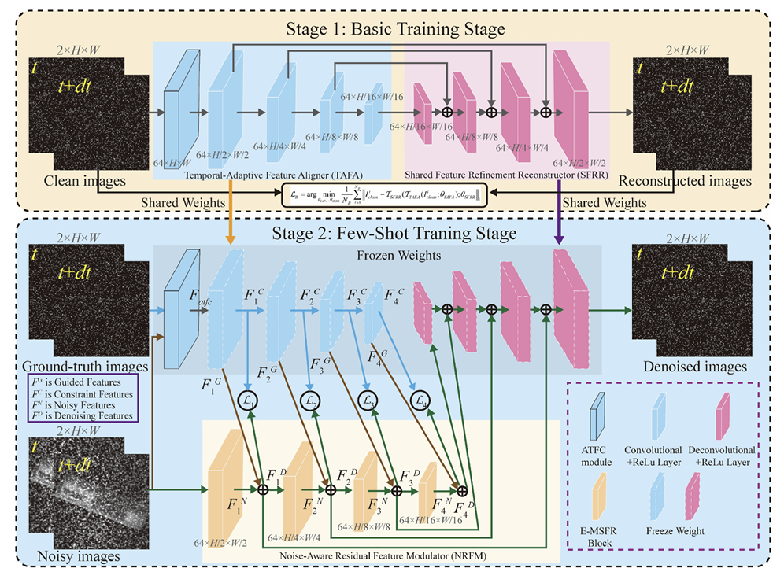
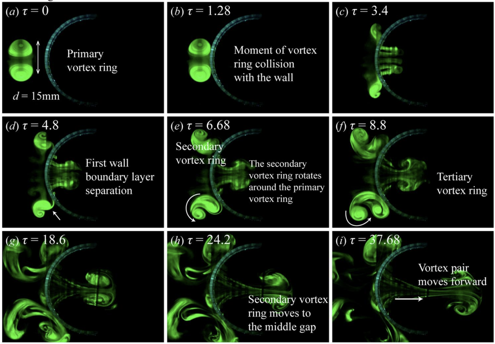
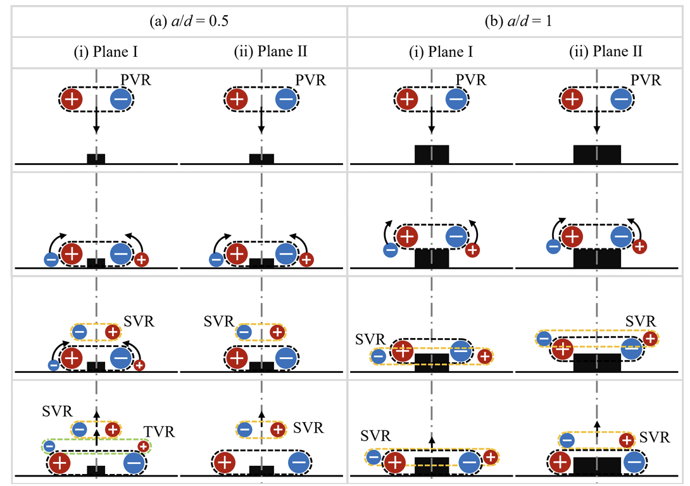
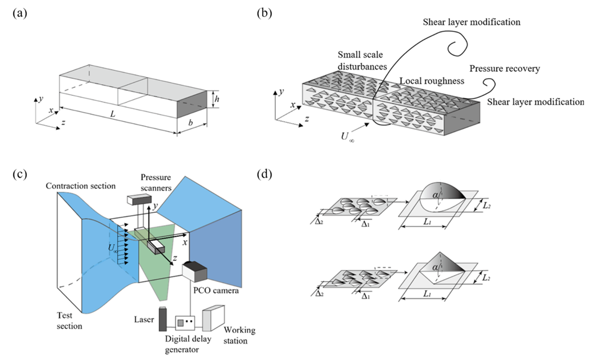
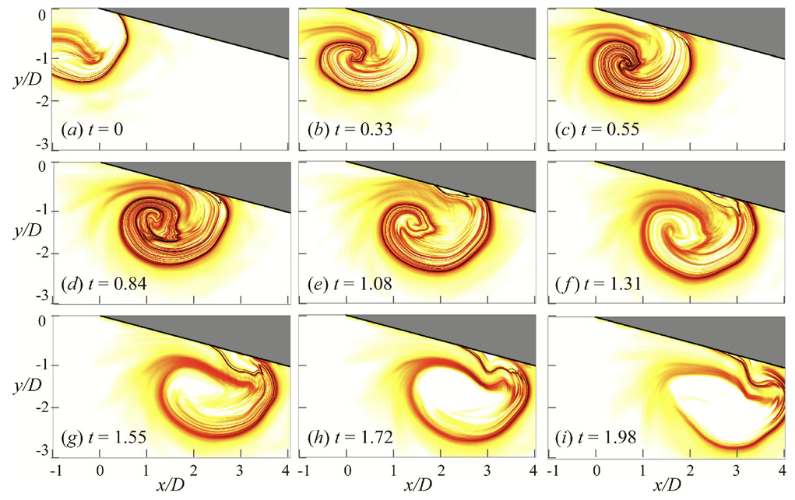
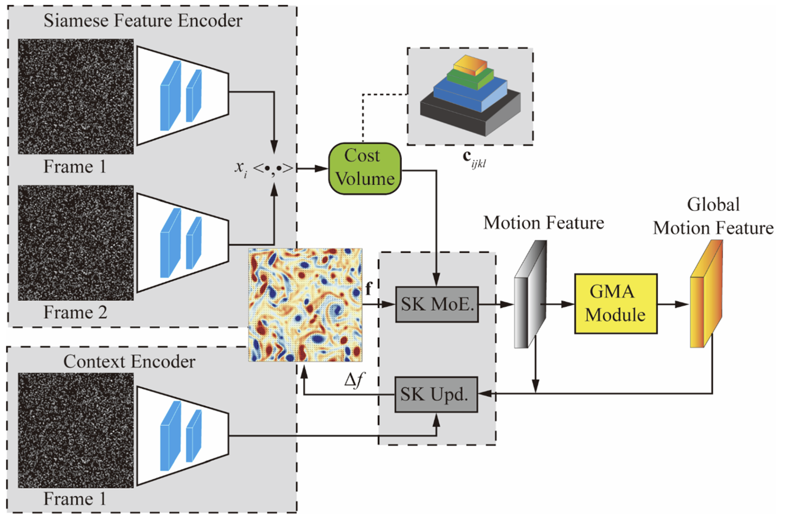
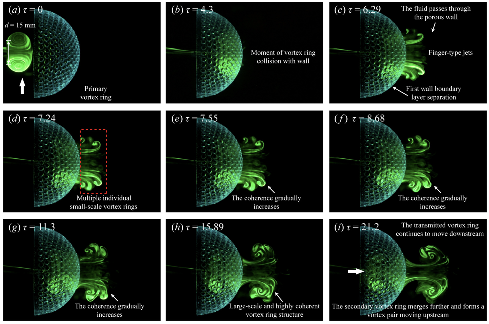
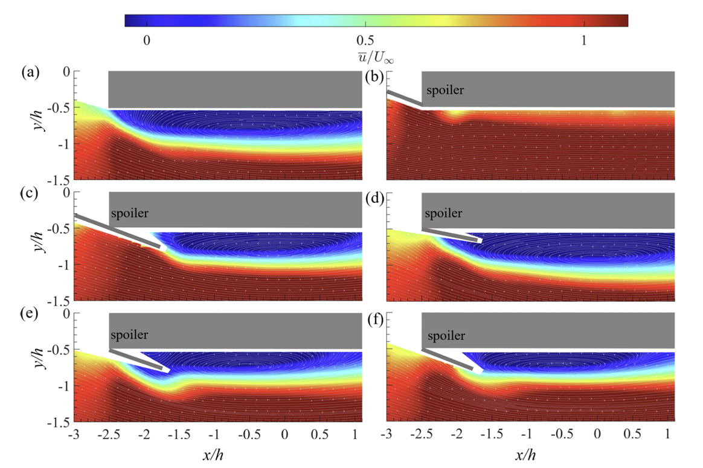
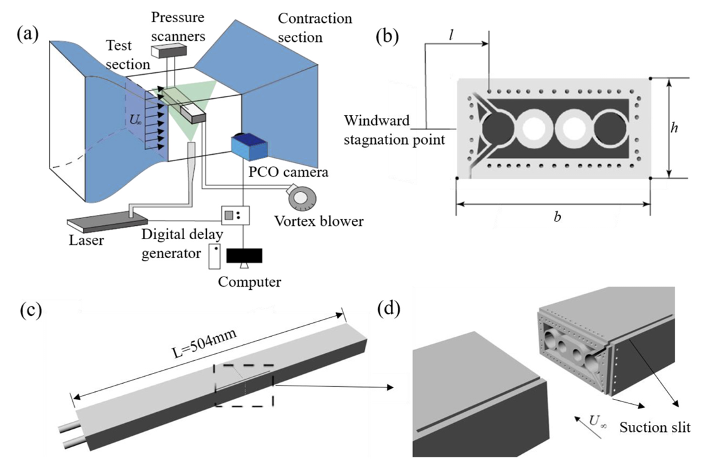

Few-shot learning framework for Particle Image Velocimetry Denoising in industrial aerodynamics
Engineering Applications of Artificial Intelligence, 2026, 116232.
Ph.D. Candidate in Mechanics, Harbin Institute of Technology
Visiting Ph.D. Student, Nanyang Technological University
I am a direct Ph.D. student in Mechanics at Harbin Institute of Technology (HIT) and currently a visiting Ph.D. student at the College of Computing and Data Science, Nanyang Technological University (NTU), working with Asst. Prof. Chuanxia Zheng.
My research lies at the intersection of computer vision, experimental fluid mechanics, and physics-aware learning. I focus on deep learning–based high-spatial-resolution Particle Image Velocimetry (PIV), optical flow, particle-image enhancement, and physically meaningful flow diagnostics, while extending toward physics-aware 4D reconstruction of dynamic and non-rigid scenes.
College of Computing and Data Science · Physical Vision Group · Host: Asst. Prof. Chuanxia Zheng · Physics-aware 4D reconstruction.
Research on deep learning–based high-spatial-resolution PIV and intelligent flow-field measurement.
Undergraduate research in fluid–structure interaction and experimental fluid mechanics.








